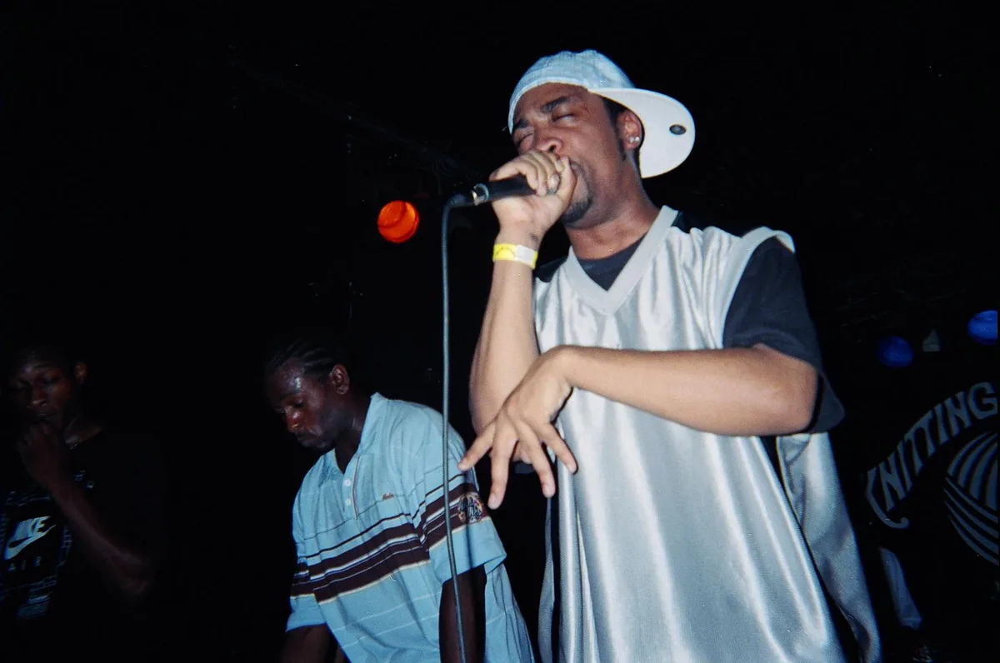
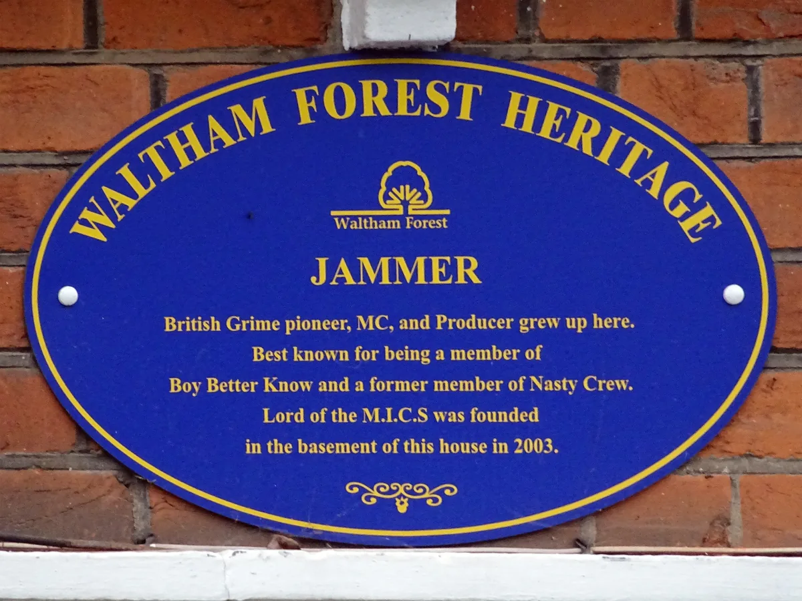
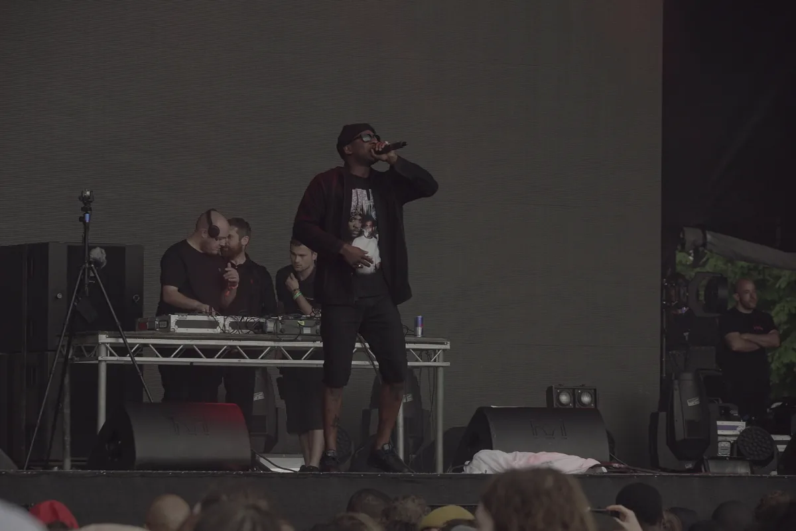

Grime music guide
Grime music: what it is, where it came from and how it sounds
Cold 140 BPM instrumentals, pirate radio, crews and clashes from East London, and the arguments about who started it that have never been settled.
More than British rap.
Grime is usually described as British rap, which is true in the way that describing jungle as fast reggae is true. It leaves out the part that made it new.
Before grime was a genre it was a set of instrumentals: cold, bare, around 140 beats per minute, made by teenagers in East London on cheap software and played on pirate radio for MCs to fight over. The MCs made it famous. The producers made it sound like nothing else. This guide covers both, and where the name, the origin story and some of the famous claims about it are still argued over.
What is grime music?
Grime music is a genre of electronic music and MC culture that emerged in East London in the early 2000s, out of UK garage, jungle, dancehall and hip-hop. Its instrumentals usually sit around 140 BPM, with sparse, syncopated drums, square-wave synthesiser riffs and heavy sub-bass, built with space for MCs who rap in quick bursts of eight or sixteen bars. It grew up on pirate radio stations such as Rinse FM and Deja Vu, in crews like Roll Deep and in recorded clashes, and it crossed into the charts with Dizzee Rascal in 2003 and again with Skepta and Stormzy after 2014.
It is not simply the British version of American hip-hop. The grime genre's tempo, its drum patterns and its habit of treating the instrumental as shared property all come from British dance music, and a good part of its early catalogue has no vocal at all.
140 BPM
What grime sounds like.
Put on a grime instrumental from 2003 and the first thing you notice is how empty it is. A kick, a snare or a clap, a few off-beat hits, a bassline that sits very low, and one or two synthesiser sounds that are almost rude in how plain they are: square waves, stabs, a string preset, a bleep. Nothing is there for decoration.
The tempo is the other constant. Most grime runs at about 140 beats per minute, faster than garage and slower than jungle. The drums rarely lock into a steady four-to-the-floor. They skip, stop and restart, which gives an MC gaps to land in. That is also why the same instrumental can feel twice as fast when someone is rapping over it: a grime MC tends to run double-time against the beat, cramming syllables into a bar.
Much of this came from the tools. Early producers made tracks in software on home computers, most famously Fruity Loops, and on games consoles, using stock sounds rather than expensive samples. The limits became the aesthetic. A cheap preset played with conviction became a signature, and a record could be finished in an afternoon and played on the radio that night.
Ruff Sqwad's "Functions on the Low" is a good example of the instrumental as its own thing: a melody, a sub-bass and drums, released without a vocal in 2004. Eleven years later Stormzy turned the same beat into "Shut Up".
1999 to 2001
Out of garage.
Grime came out of UK garage, but not in a straight line. By 1999 and 2000 the MCs on garage pirate stations were getting louder and more central, while the music underneath them was getting darker, sparser and less interested in the vocal hooks that had taken garage into the charts. Crews like So Solid from Battersea and Pay As U Go from East London were still making garage records, but the energy was going somewhere else.
Pay As U Go's "Know We" from 2000 is one of the records usually offered as the moment it tipped: a garage tempo, a menacing bass, and MCs rather than a singer at the front. The group included Wiley and Maxwell D, and several of its members carried the sound forward in Roll Deep. Oxide & Neutrino's "Bound 4 Da Reload", a number one in 2000, belongs to the same turn and is covered in the UK garage guide.
The other roots matter as much. Jungle's MC culture, where a host runs over breakbeats for a whole set, was the older model for what grime MCs did on the radio. Dancehall supplied vocal styles, sound-system clashes and a lot of the attitude. American hip-hop supplied some of the language. Grime is a mix of those, played at a tempo that belonged to none of them.
Nobody in 2001 called it grime yet. For a few years the same music went by several names at once, which is part of why arguments about the first grime record never end.
2001 to 2005
Wiley, eskibeat and the producers.
Richard Cowie, known as Wiley, grew up around Bow in East London. He had been in a jungle crew as a teenager and in Pay As U Go during the garage years, and around 2001 he began releasing instrumentals on his own label, Wiley Kat, that sounded like nothing else on the radio. He called them eskibeat.

"Eskimo", pressed on white label vinyl in 2002, is the best known of them: a few icy synth notes, a sliding bass and drums that feel as if they are holding back. Wiley also made "devil mixes", versions of his instrumentals with the drums removed, leaving only bass and melody so the MCs had nothing to lean on. Talking to Martin Clark for Hyperdub in 2003, he explained the cold titles as a reflection of how cold he felt at the time, and he rejected the word grime for what he was making.
He was not working alone. Youngstar's "Pulse X", credited to Musical Mob in 2002, stripped a track down to drums and one low, pulsing bass note, and became one of the most played records on pirate radio. It is on the UK electronic music timeline, where it marks the start of grime. Ruff Sqwad from Bow made melodic, almost wistful instrumentals. Terror Danjah made heavy, dramatic ones, and "Cock Back", from 2003, packed four MCs onto one of them: Hyper, Crazy Titch, D Double E and Riko. Jammer, from Leytonstone, made "Murkle Man" in 2005 and became better known for what happened in his basement.
What these producers had in common was a sense that the beat was a tool for MCs, but also a record in its own right. Grime instrumentals were released, played and fought over on their own. Later, producers made "war dubs", instrumentals aimed at rival producers, and a strand of instrumental grime carried on into the 2010s after the MCs had moved on.
Radio, crews and clashes.
Pirate radio was grime's infrastructure. Stations broadcast illegally from tower blocks, and a show was a room of MCs passing the microphone around while a DJ played instrumentals, often for two hours at a time. Rinse FM, founded in 1994 by Geeneus and Slimzee, had moved through jungle and garage and became the most important grime station. Deja Vu, Freeze, Mission and others filled the rest of the dial. The live DJ sets guide tells Rinse's longer story.
Crews were the unit. Roll Deep formed around Wiley and his friends from the estates of Bow, with Dizzee Rascal, Flowdan, Riko, Jet Li and others passing through it. Nasty Crew, Ruff Sqwad, Meridian Crew and, later, Boy Better Know were others. An MC made a name in a crew on the radio before making one alone.
The clash was the format that decided reputations. In 2004 Jammer and Chad "Ratty" Stennett filmed MCs going head to head in a basement in Leytonstone and sold the result on DVD as Lord of the Mics. The first edition set Wiley, the established figure, against a teenage Kano, and it is still the clash people quote. The plaque on the house gives 2003 as the year the series was founded there, the DVDs 2004.

Channel U, a satellite music channel that launched in 2003 and played cheap videos by unsigned artists, did for grime on television what the pirates did on radio. Raves such as Eskimo Dance, which Wiley started, and Sidewinder brought the MCs and crowds into the same rooms.
The name
What do you call it?
The music did not have one name at first. It was called 8-bar, after the length of an MC's verse, nu shape, sublow, after the depth of the bass, eskibeat, after Wiley's records, and grimy, which is where grime came from. The word appears to have been picked up by journalists and listeners describing how rough the music sounded, and it had settled by about 2003.
Not everybody liked it. Wiley rejected it in interviews that year, and in 2004 he released "Wot Do U Call It?", a single that asked whether the music was garage, urban or something else. It reached number 31.
So the honest answer to "why is British rap called grime" is that it mostly is not. Grime is one part of British rap, the part with this particular sound and history, and the name came from how the music sounded rather than from anyone's decision.
2003 to 2005
Dizzee, Kano and the first breakthrough.
Dizzee Rascal was a teenager from Bow who had DJed jungle as Dizzy D and rapped with Roll Deep. Much of his first album was made on Fruity Loops, some of it at Langdon Park School, where he was sixteen when he started. "I Luv U", released by XL Recordings in May 2003, reached number 29, and the album Boy in da Corner followed in July. In September it won the Mercury Prize.
The prize put grime in front of an audience that had never heard a pirate station, and the record still sounds stranger than most of what followed it: jagged beats, squealing synths and a very young voice describing the pressure of the estate he lived on.
Others followed through the door. Kano, from East Ham, released "P's and Q's" in 2004 and moved to a major label. Lethal Bizzle's "Pow! (Forward)", from the same year, put eleven MCs on one track and reached number 11 at the start of 2005. Some London venues banned it, fearing what it did to their dancefloors. Wiley released Treddin' on Thin Ice. For a while grime looked like the next British pop music.
2005 to 2013
Form 696 and the pop years.
It did not last. In 2005 the Metropolitan Police introduced Form 696, a risk assessment promoters had to fill in before events. It asked for the names and contact details of performers and, in its original form, for the style of music and the expected audience. Promoters and artists said it was used to shut down grime nights and events for Black audiences in particular. The form was scrapped in November 2017 after a review ordered by the Mayor of London, but by then it had shaped a decade of London nightlife.
With live shows hard to put on, many MCs looked for pop. Wiley's "Wearing My Rolex" reached number 2 in 2008 with a house beat, and a wave of grime MCs followed him into electro-pop records. Some of them charted, some did not, and the purists called it the end of grime. Dubstep and UK funky, meanwhile, took over the clubs grime had been locked out of.
What kept it going was the internet and a few stubborn people. Logan Sama's show on Kiss was one of the only regular places to hear grime on daytime radio. YouTube channels such as SB.TV, Link Up TV and GRM Daily took over from Channel U. Lord of the Mics came back in 2011. And producers kept making instrumentals for each other.
The return, 2014 to 2017.
Grime came back with records that sounded like its beginnings. Meridian Dan's "German Whip", with Big H and JME, reached number 13 in 2014. Skepta's "That's Not Me", also with JME, reached number 21 with a video made on a tiny budget that looked like early Channel U on purpose. Grime MCs appeared on stage with Kanye West at the 2015 Brit Awards.

Stormzy, from Croydon in south London, built his following with freestyles over grime instrumentals. "Shut Up", filmed in a car park and built on "Functions on the Low", was released as a single in 2015 and reached number 8 after he performed it at Anthony Joshua's ring walk that December.
In 2016 Skepta released Konnichiwa on his own Boy Better Know label. It reached number 2 and won the Mercury Prize, thirteen years after Dizzee. In February 2017 Stormzy's Gang Signs & Prayer became the first grime album to reach number one, and in 2019 he headlined Glastonbury.
Behind the headliners a new generation of MCs arrived at the same time, including AJ Tracey, Novelist, Jammz and Lady Leshurr. This time the music reached people who had never been near the old pirate stations, including audiences abroad, and it stayed. Many of the MCs who broke through in those years have since moved across UK rap, pop and other styles, but the grime records remain the base they built on.
Grime, UK rap, drill and dubstep.
These terms get used interchangeably, and they should not be. Grime is a specific sound with a specific history. UK rap is the broad category of British rap music, which includes grime but also slower hip-hop styles and much else. UK drill arrived later, in the early 2010s in south London, taking its dark mood and sliding bass from Chicago drill and reworking the drum patterns. Dubstep came from the same garage roots at the same tempo, but went instrumental and half-time, which the dubstep guide covers.
| Tempo | What the beat does | Where and when | |
|---|---|---|---|
| Grime | About 140 BPM | Sparse, syncopated drums, square-wave riffs, sub-bass, MCs in double time | East London, early 2000s |
| UK garage | 130 to 135 BPM | Swung, skipping 2-step drums, sung vocal hooks | London, mid-1990s |
| Dubstep | About 140 BPM, felt at half time | Mostly instrumental, space and sub-bass | South London, early 2000s |
| UK drill | About 140 BPM, felt at half time | Sliding 808 bass, shuffled hi-hats, dark storytelling | South London, early 2010s, from Chicago drill |
| UK rap | Anything | The broad category: grime, drill and slower hip-hop styles | Across Britain |
Is Stormzy grime or drill? He came up as a grime MC, and "Shut Up" is a grime record. Much of his later catalogue sits in UK rap, gospel and pop. He is not a drill artist.
Disputed
Who started grime?
There is no single inventor, and the argument is part of the culture. Wiley is called the godfather of grime, a title he has also resisted, because eskibeat defined the sound and because he brought through many of the MCs who made it famous. Dizzee Rascal has pointed to his own earliest tracks. Others name Pay As U Go's "Know We", So Solid Crew, or "Pulse X".
Wiley's standing also changed for reasons outside music. In July 2020 he posted antisemitic messages on social media. His management dropped him, several platforms removed his accounts, and in 2024 the MBE he had received in 2018 for services to music was revoked.
The idea that grime is only East London is also too tidy. The first wave was centred on Bow and the surrounding boroughs, but So Solid came from Battersea, Skepta and JME from Tottenham, and the 2010s return was led as much from south and north London as from the east. The music spread to Birmingham, Manchester and beyond, and grew smaller scenes in Canada, Japan and Brazil.
Grime now.
Grime is no longer the new thing. Drill, afroswing and other styles took over the charts and the playlists. But the instrumentals are still made, the old records are still played, and the anniversaries are big events. In 2023 Rinse FM marked twenty years of Boy in da Corner with Dizzee Rascal, JME, P Money and Jammer in the studio. In 2024 Flowdan, who stood beside Wiley in Roll Deep, shared a Grammy Award for "Rumble", a record he made with Skrillex and Fred again...
This site's catalogue of recorded DJ sets holds 705 sets tagged grime. The names that appear most often are DJs rather than MCs, including Oneman, Spooky, Madam X and Logan Sama, which says something about how the music lives now: in sets that move between grime and the other 140 BPM styles it grew up beside.
Grime music FAQ.
What is considered grime music?
Grime is a genre of electronic music and MC culture from East London in the early 2000s. It usually runs at around 140 BPM, with sparse, syncopated drums, square-wave synthesiser riffs and heavy sub-bass, and MCs who rap in quick eight- or sixteen-bar bursts. It grew out of UK garage, jungle, dancehall and hip-hop on pirate radio stations such as Rinse FM.
Why is British rap called grime?
Not all British rap is grime. Grime is one style within it, with its own sound and history. The name came from "grimy", a word used for the rough, dark sound of the music around 2002 and 2003. Earlier names included 8-bar, sublow, nu shape and eskibeat.
Is Stormzy grime or drill?
Stormzy came up as a grime MC. His early freestyles and his 2015 single "Shut Up" are grime, and his debut album Gang Signs & Prayer was the first grime album to reach number one in the UK. Much of his later music is UK rap, gospel and pop. He is not a drill artist.
How is grime different from rap?
Grime is a form of rap, but its music comes from British dance music rather than American hip-hop. It is faster, usually around 140 BPM, with electronic instrumentals, sparse drums and heavy sub-bass, and grime MCs tend to rap in fast bursts suited to radio sets and clashes. UK rap is the wider category, which includes grime alongside slower hip-hop styles and drill.
Who are the most famous grime artists?
The best known include Wiley, Dizzee Rascal, Kano, Skepta, JME, Stormzy, Ghetts, D Double E, Lethal Bizzle and Flowdan, along with crews such as Roll Deep and Boy Better Know. Producers including Wiley, Ruff Sqwad, Terror Danjah and Jammer shaped the sound itself.
What are some famous grime songs?
A good starting route is Pay As U Go's "Know We", Wiley's "Eskimo", Youngstar's "Pulse X", Dizzee Rascal's "I Luv U", Wiley's "Wot Do U Call It?", Kano's "P's and Q's", Lethal Bizzle's "Pow! (Forward)", Meridian Dan's "German Whip", Skepta's "That's Not Me" and Stormzy's "Shut Up". Most of them are embedded in this guide.
Sources.
- Hyperdub archive via fabric: Eski Beat, an interview with Wiley by Martin Clark (October 2003)
- Red Bull Music Academy Daily: Wiley, The Eski Boy, by Emma Warren (2015)
- Wikipedia: Grime music
- Wikipedia: Lord of the Mics
- Wikipedia: Boy in da Corner
- Resident Advisor: Form 696 scrapped by London's Metropolitan Police (2017)
- Wikipedia: Konnichiwa (Skepta album)
- DJ Mag: Rumble wins Best Dance/Electronic Recording at the 2024 Grammys
- Set counts and artist frequencies are measured from this site's own catalogue of 62,824 recorded DJ sets, as of September 2026.
Continue reading
Read next.
 A14Guide / Live DJ sets / ~12 min
A14Guide / Live DJ sets / ~12 minWhere to Watch Live DJ Sets: Boiler Room, HÖR, NTS and More
Where to watch DJ sets online, how the main platforms differ, and a route through 62,824 archived recordings.
Read article → A17Guide / Creamfields / ~11 min
A17Guide / Creamfields / ~11 minCreamfields Festival: Where It Is, How It Grew, the Music
Four days on the Daresbury estate every August bank holiday: where Creamfields happens, how a Liverpool house night grew into it, who owns it, and what plays beyond the Arc Stage.
Read article → A03Timeline / UK music / ~27 min
A03Timeline / UK music / ~27 minThe Evolution of UK Electronic Music
Ten sounds that travelled from regional underground scenes into global culture.
Read article → A06Guide / Dubstep / ~15 min
A06Guide / Dubstep / ~15 minWhat Is Dubstep? Origins, Sound and the Genre Split
From south London record shops and 200-capacity basements to a genre that split into two sounds sharing one name.
Read article →